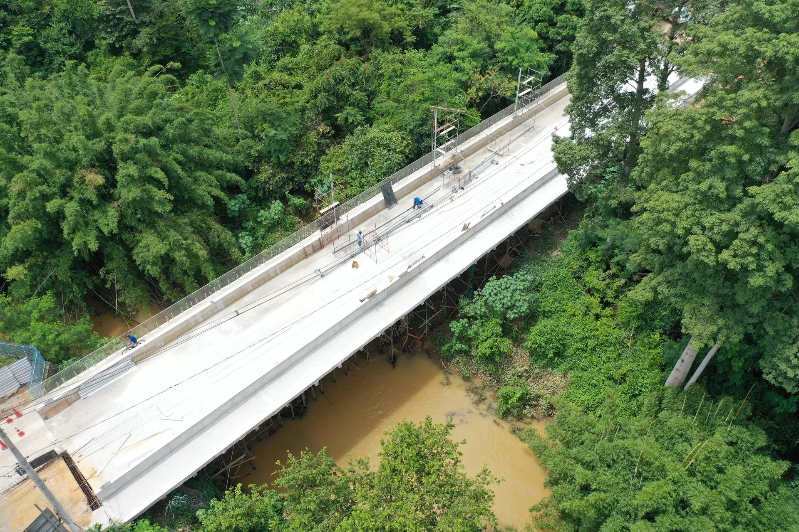
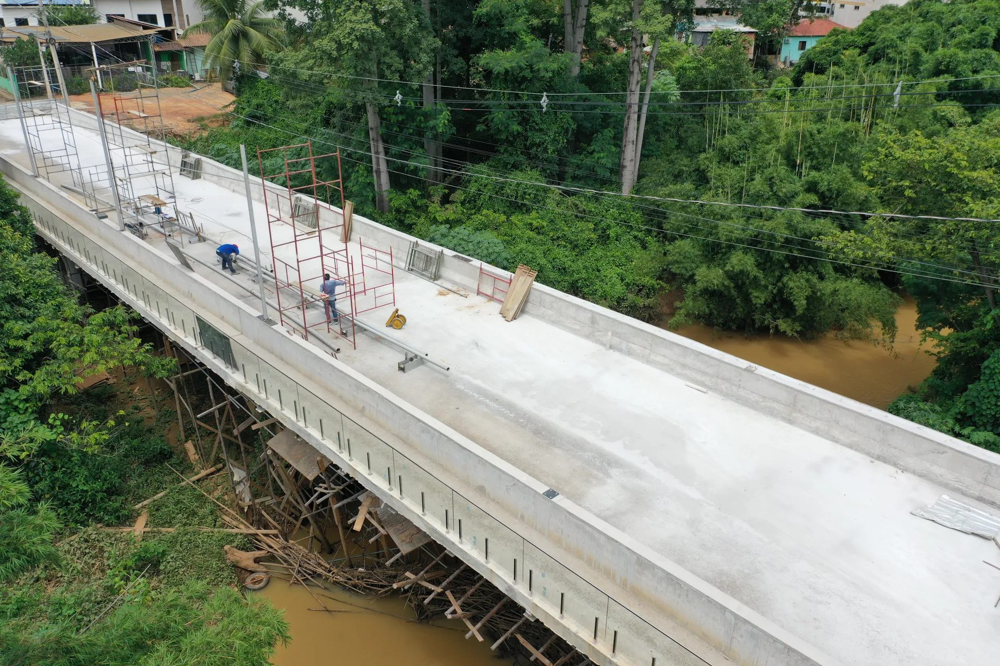
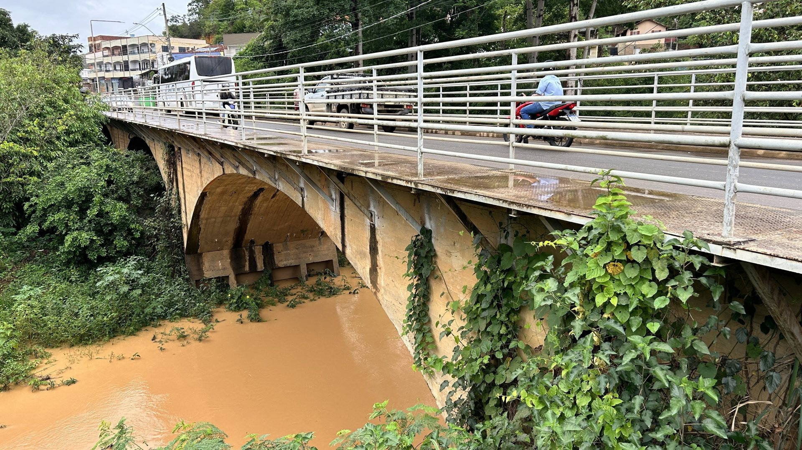

← Obras




01 / 04
Ampliação de ponte
Ponte do Rio Santa Maria do Doce
86mde extensão
978m²de tabuleiro
11,30mde largura
Contexto
Ponte em arco dos anos 1940 que precisava ser alargada.
Entrega
Inspeção e ensaios da estrutura existente e projeto de ampliação em estrutura mista de aço e concreto.
Resultado
Ponte ampliada sem demolição.